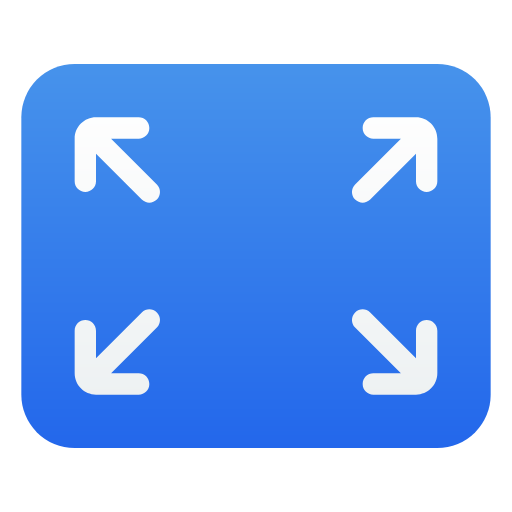

<!DOCTYPE html>
<html lang="en">
<head>
    <meta charset="UTF-8">
    <meta name="viewport" content="width=device-width, initial-scale=1.0">
    <title>MacBook Dock</title>
    <style>
        body {
            margin: 0;
            padding: 0;
            background-color: #333;
            font-family: Arial, sans-serif;
        }
        .dock-container{
            width: 100%;
            display: flex;
            align-items: center;
            justify-content: center;
            margin: 10px;
        }
        #dock {
            display: flex;
            justify-content: center;
            position: fixed;
            bottom: 0;
            width: 30%;
            min-height: 45px;
            z-index: 999;
            margin: 10px;
            padding: 5px;
            background: rgba(255, 255, 255, 0.70);
            border-radius: 12px;
            box-shadow: 0 4px 30px rgba(0, 0, 0, 0.1);
            backdrop-filter: blur(7.4px);
            -webkit-backdrop-filter: blur(7.4px);
            border: 1px solid rgb(197, 197, 197);
            transition: all 0.9s ease;
        }

        .custom-input{
            background-color: transparent;
            border: 0px transparent;
            padding: 0px 10px;
            font-size: medium;
            width: 100%;
            outline: none;
            color: rgb(43, 42, 42);
        }
        .fullscreen-button{
            height: 100%;
            background-color: transparent;
            border: 0px transparent;
            cursor: pointer;
        }
        .fullscreen-icon{
            max-width: 30px;
        }
        .custom-input :focus{
            background-color: #0a0707;
        }
       
        .dock-item:hover {
            color: #fff;
        }

        .dock-icon {
            font-size: 24px;
            margin-bottom: 5px;
        }
        
    </style>
</head>
<body background="background.png" style="background-repeat: repeat-x; background-size: cover;">
    <div class="dock-container">
        <div id="dock">
            <input class="custom-input" id="ai-textbox" placeholder="Ask Maya AI  [ctrl + /]"/>
            <button class="fullscreen-button" onclick="resizeDivToViewport()">
                <!--  -->
                <svg xmlns="http://www.w3.org/2000/svg" width="16" height="16" fill="currentColor" class="bi bi-send" viewBox="0 0 16 16">
                    <path d="M15.854.146a.5.5 0 0 1 .11.54l-5.819 14.547a.75.75 0 0 1-1.329.124l-3.178-4.995L.643 7.184a.75.75 0 0 1 .124-1.33L15.314.037a.5.5 0 0 1 .54.11ZM6.636 10.07l2.761 4.338L14.13 2.576 6.636 10.07Zm6.787-8.201L1.591 6.602l4.339 2.76 7.494-7.493Z"/>
                  </svg>
            </button>
        </div>
    </div>
<script>
    // Function to handle keydown events
    function handleKeyDown(event) {
        // Check if Ctrl and / keys are pressed simultaneously
        if (event.ctrlKey && event.key === '/') {
            event.preventDefault(); // Prevent the default behavior of Ctrl+/
            const inputField = document.getElementById('ai-textbox');
            inputField.placeholder = 'Start Typing  ↵';
            inputField.focus(); // Focus on the input field
        }
    }
    function resizeDivToViewport() {
            const myDiv = document.getElementById("dock");
            myDiv.style.width = "95vw"; // 100% of viewport width
            myDiv.style.height = "90vh"; // 100% of viewport height
            myDiv.style.background= rgb(0,0,0);
        }
    document.addEventListener('keydown', handleKeyDown);
</script>
</body>
</html>
